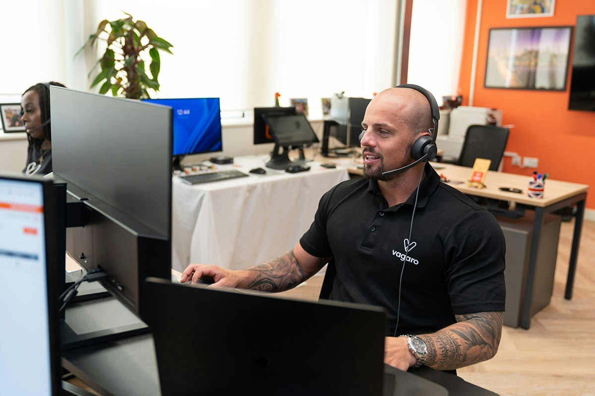

Outsourcing de TI para fechar gaps técnicos sem parar a operação
Selecionamos cada profissional com curadoria técnica, integramos ao time em poucos dias e acompanhamos a entrega com uma Business Partner dedicada.
Solicitar um especialista
Capacidade técnica pronta para entrar em poucos dias
O gargalo raramente é a tecnologia. É colocar a pessoa certa no time sem travar a operação. A Mosten resolve isso com recrutamento técnico ativo e um banco de profissionais já avaliados: o tempo entre abrir a vaga e ter alguém entregando cai de meses para dias.
+0%
de aprovação técnica
+0 anos de experiência
em operações enterprise
0 dias
prazo médio de alocação
+0
candidatos registrados
Como selecionamos e integramos o profissional
Um processo com sete etapas, do briefing técnico ao acompanhamento depois da entrada.
Briefing técnico
Mapeamos contexto, objetivo e restrição do time antes de sair procurando perfil.
Hunting de talentos
Buscamos entre especialistas internos e parceiros validados. Nunca freelancer avulso.
Recrutamento e seleção
Avaliamos critério técnico e aderência ao contexto, além do currículo.
Avaliação técnica
Um especialista da área valida a competência antes da proposta seguir para o cliente.
Validação com o cliente (opcional)
Você entra na etapa final se quiser aprovar o perfil.
Alocação rápida
Profissional começa no time em média em 10 dias.
Acompanhamento por Business Partner
Uma BP dedicada monitora desempenho e continuidade. Isso separa outsourcing com governança de alocação solta.
Outsourcing para cada frente de tecnologia
Do desenvolvimento à inteligência de dados, cada perfil é selecionado para o seu contexto, não para preencher uma vaga genérica.
Designers, researchers, PMs, POs, agilistas.
Arquitetos, devs full-stack, especialistas em linguagens críticas.
Automação, infraestrutura, pipelines escaláveis.
Engenheiros de dados, cientistas, analistas de BI.
QA, testes, suporte estratégico.

Esses profissionais fazem parte de uma equipe com expertise construída em diferentes frentes de tecnologia.
Conheça nossa atuação em Dados & Inteligência e Engenharia & Transformação Digital.
Solicitar um especialistaAntes e depois de um outsourcing técnico da Mosten
O que muda na operação quando o perfil certo entra com o acompanhamento certo.
O que os clientes dizem
Dúvidas frequentes sobre o outsourcing de TI da Mosten.
Como funciona o outsourcing de profissionais de TI?
A Mosten conduz todo o processo: você descreve a necessidade e cuidamos da seleção, do alinhamento de perfil e da gestão durante a alocação.
Os profissionais são da Mosten?
Sim, internos ou parceiros validados. Nunca freelancer avulso. É isso que sustenta a curadoria e a previsibilidade.
Em quanto tempo tenho alguém alocado?
Em média 10 dias, dependendo da complexidade da vaga e da validação do perfil.
A Mosten cuida da gestão?
Sim. O profissional é acompanhado por uma Business Partner (BP) dedicada, que monitora desempenho e continuidade.
Preciso me envolver no processo?
Só se quiser. Você pode participar da validação final do perfil ou deixar todo o processo com a Mosten.
Quais áreas de tecnologia posso contratar?
Todas as frentes: desenvolvimento, dados, cloud, DevOps, qualidade, produto e mais.
O que é outsourcing de TI e como funciona na Mosten?
Outsourcing de TI é o modelo de alocação de profissionais sob demanda. Na Mosten, isso vem com curadoria técnica, integração ao contexto e acompanhamento por uma BP. O especialista pode evoluir depois para squad ou projeto.
Comece pelo diagnóstico da sua operação.
Converse com nosso time sobre o desafio da sua operação e o que precisa ser resolvido.